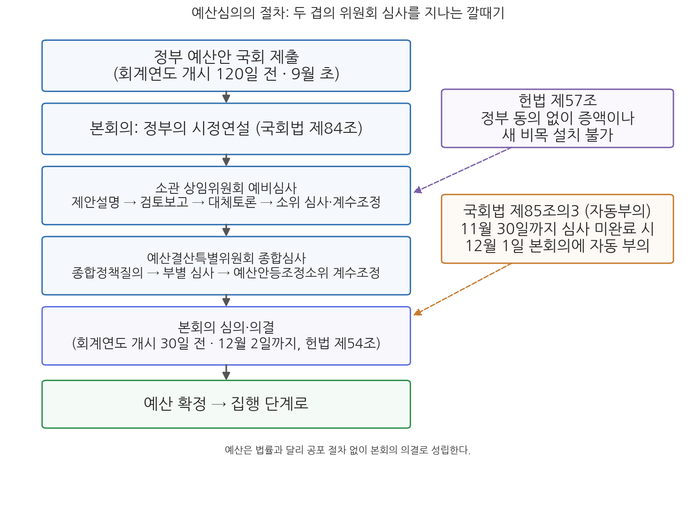
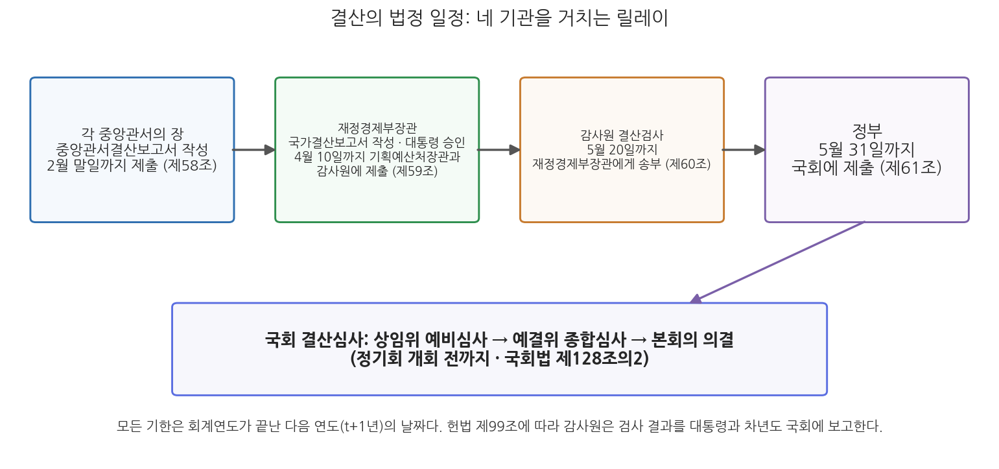

10주차 2차시. 재정과정론 (2): 예산심의, 집행, 결산
최종 수정: 2026-08-13 · 이 교재는 학기 중에도 계속 업데이트됩니다
재정에 대한 이 권한이야말로 어떤 헌법이 인민의 직접 대표에게 쥐여 줄 수 있는 가장 완전하고 효과적인 무기라 할 수 있다. (제임스 매디슨, 『연방주의자 논설』 제58호, 1788)
이 장에서 배우는 것
두 개의 12월을 나란히 놓고 시작하자. 2025년 12월 2일, 국회는 2026년도 예산안을 총지출 727조 9,000억 원으로 의결했다. 헌법이 정한 법정기한(회계연도 개시 30일 전) 안에 여야 합의로 처리된 것은 2021년 이후 5년 만이었다. 국회 심의 과정에서 정부안의 4조 3,000억 원이 깎이고 4조 2,000억 원이 새로 얹혔다. 꼭 1년 전의 풍경은 정반대였다. 2024년 12월 10일, 2025년도 예산은 여야 합의 없이 야당 주도로 정부안에서 4조 1,000억 원을 감액한 수정안이 통과되었다. 증액 없이 감액만으로 예산이 확정된 헌정 사상 첫 사례였다. 같은 헌법, 같은 절차인데 어느 해는 합의의 무대가 되고 어느 해는 대치의 무대가 된다. 예산심의가 계산이 아니라 정치과정이라는 것, 그리고 그 정치가 헌법 제54조와 제57조가 깔아 놓은 규칙 위에서 벌어진다는 것이 이 장의 첫 번째 주제다.
지난 차시에서 우리는 기획예산처의 1년을 따라 예산안이 만들어져 9월 초 국회에 제출되는 것까지 보았다. 이번 차시는 그 뒤의 이야기다. 국회는 예산안을 어떤 절차로 뜯어보는가(심의), 확정된 예산은 어떻게 쓰이며 계획과 현실의 틈은 무엇으로 메우는가(집행과 신축성), 그리고 다 쓴 돈은 누가 어떻게 정산하고 검사하는가(결산과 회계검사). 이로써 예산주기의 네 바퀴가 완성된다. 구체적으로 다음을 배운다.
- 예산심의의 기능(정책형성과 행정감독)과 절차: 시정연설, 상임위원회 예비심사, 예산결산특별위원회 종합심사, 본회의 의결
- 헌법 제54조의 기한(90일·30일)과 국회법의 자동부의 제도
- 한국 예산심의의 특징: 증액 동의권 제한(헌법 제57조), 짧은 심의 기간, 소소위 관행
- 예산집행의 두 목표(통제와 신축성)와 신축성 확보수단: 이용·전용·이체·이월·예비비·계속비의 개념과 국가재정법 근거
- 결산의 법정 절차와 일정: 재정경제부장관의 국가결산보고서 작성, 감사원 결산검사, 국회 결산심사
이 장은 하나의 질문을 따라 전개된다. "행정부가 만든 예산안은 어떻게 국민의 예산이 되고, 쓰인 뒤에는 어떻게 책임이 정산되는가?"
2.1 예산심의의 기능과 절차를 헌법의 기한과 함께 본다 → 2.2 증액 동의권 제한, 짧은 심의 기간, 소소위 관행 등 한국 심의의 특징을 뜯어본다 → 2.3 예산집행의 통제 장치와 여섯 가지 신축성 확보수단을 조문과 함께 정리한다 → 2.4 결산과 회계검사의 절차를 따라가며 예산주기를 닫고, 11주차 예산행태론을 예고한다.
2.1 예산심의의 기능과 절차
재정통제에서 출발한 정치과정
예산심의는 행정부가 작성한 예산안을 입법부가 심사하는 정치과정이다. 역사적으로 예산심의는 왕권의 지출을 통제하려는 재정통제의 일환으로 등장했고, 오늘날에는 재정민주주의를 실현하는 핵심 장치다. 이 장 첫머리의 매디슨의 말대로, 지갑에 대한 권한은 대표기관이 행정부를 통제하는 가장 강력한 무기이기 때문이다. 심의의 강도는 정부 형태에 따라 다르다. 대통령제 국가에서는 의회의 예산심의 권한이 강력하고 심의도 엄격하게 이루어진다. 미국 연방의회는 삭감, 증액, 폐지 등 예산에 관한 모든 수정을 제한 없이 할 수 있는데, 그만큼 총량적 재정 규율이 흔들리기 쉽다는 문제가 따라붙는다. 반면 의원내각제에서는 내각이 의회 다수당에서 나오므로 의회 심의는 상대적으로 제한적이다(영국, 일본). 한국은 대통령제이므로 국회의 심의권이 강한 편이지만, 뒤에서 보듯 증액에 관한 독특한 제한이 있어 미국형과는 다른 모습을 보인다.
예산심의의 기능은 정책형성과 행정감독의 두 가지로 나뉜다. 정책형성 기능은 다시 미시적 결정과 거시적 결정으로 구분된다. 개별 사업과 사업 수준(금액)에 대한 결정이 미시적 결정이고, 예산총액이나 흑자·적자 기조처럼 세입과 세출의 관계에 대한 결정이 거시적 결정이다. 의회는 심의를 통해 제한적으로나마 이 정책형성에 참여한다. 행정감독 기능은 심의 과정에서 정책과 사업계획을 검토해 사업을 폐지·축소·확장하고, 금액 산정을 따져 낭비적 지출을 걸러 내는 것이다. 이를 통해 입법부는 행정부가 산출과 성과에 관한 정보를 생산·공개하도록 압박한다. 다만 위원회 중심으로 감독이 쪼개져 통합적 감독이 어렵고, 유권자들이 의원에게 기대하는 역할이 감시자보다 지역 사업을 따오는 촉진자에 가깝다는 현실적 한계도 지적된다.
절차: 시정연설에서 본회의까지
한국의 예산심의는 네 단계를 거친다. 그림 10-3이 전체 흐름이다.

그림 10-3을 읽는 법은 이렇다. 위에서 아래로 시간 순서에 따라 정부의 제출, 시정연설, 상임위원회 예비심사, 예산결산특별위원회 종합심사, 본회의 의결이 이어지고, 오른쪽의 점선 상자는 심의를 규율하는 헌법·국회법상 장치(기한, 자동부의, 증액 동의권 제한)다. 이 그림에서 알 수 있는 것은 심의가 두 겹의 위원회 심사(예비심사와 종합심사)를 통과하는 깔때기 구조이며, 그 전 과정이 법정 기한이라는 시계 아래에서 진행된다는 점이다.
첫째, 시정연설이다. 예산안이 국회에 제출되면 본회의에서 정부의 시정연설을 듣는다(국회법 제84조). 시정연설은 대통령이 국정 운영의 방향과 예산안의 기조를 국회에 직접 설명하는 절차로, 관행상 국무총리가 대독하기도 한다.
둘째, 소관 상임위원회의 예비심사다. 예산안을 상임위원회별로 나누어 먼저 심사하게 하는 것은 한국 심의 절차의 특징이다. 상임위원회에서는 소관 부처 장관의 제안설명, 전문위원의 검토보고, 대체토론을 거쳐 소위원회 심사와 계수조정이 이루어지고, 전체회의에서 예비심사 결과를 의결해 보고하면 국회의장이 이를 예산결산특별위원회에 회부한다.
셋째, 예산결산특별위원회(예결위)의 종합심사다. 예결위는 2000년부터 상설화된 특별위원회로, 교섭단체 소속 의원 수와 상임위원회 위원 수의 비율에 따라 50인의 위원으로 구성되며 위원의 임기는 1년이다. 종합심사는 종합정책질의, 부처별 심사를 거쳐 계수조정 단계로 넘어간다. 계수조정이란 예산 과목의 금액(계수)을 증감하는 실질적이고 최종적인 심사 단계로, 예결위원 중 소수로 구성되는 예산안등조정소위원회가 맡는다. 실질적인 증액과 감액의 결정 대부분이 이 좁은 방에서 이루어진다.
넷째, 본회의 의결이다. 예결위의 종합심사를 마친 예산안은 본회의에 부의되어 심의·의결로 확정된다. 예산은 법률과 달리 공포 절차 없이 의결로 성립한다. 6주차에서 본 것처럼, 이렇게 확정된 최초의 예산이 본예산이고, 이후 사정 변경에 따라 추가경정예산(추경)이 편성될 수 있다.
이 모든 절차는 헌법이 정한 시계 안에서 돌아간다.
"① 국회는 국가의 예산안을 심의·확정한다.
② 정부는 회계연도마다 예산안을 편성하여 회계연도 개시 90일 전까지 국회에 제출하고, 국회는 회계연도 개시 30일 전까지 이를 의결하여야 한다."
무슨 뜻인가. 제1항은 예산 확정권이 국회에 있음을 선언한다. 행정부가 아무리 정교하게 편성해도 국회의 의결 없이는 한 푼도 쓸 수 없다는 사전의결 원칙의 헌법적 근거다. 제2항은 심의의 시간표다. 정부는 늦어도 회계연도 개시 90일 전까지 제출해야 하고(지난 차시에서 본 대로 국가재정법 제33조가 이를 120일 전으로 앞당겼다), 국회는 30일 전까지, 곧 12월 2일까지 의결해야 한다. 해마다 언론에 등장하는 "예산안 법정 처리시한 12월 2일"이 바로 이 조항이다. 기한 안에 의결되지 못한 채 새 회계연도가 시작되면 헌법 제54조 제3항의 준예산 제도가 작동하는데, 그 내용은 6주차 1차시에서 다루었다.
2.2 한국 예산심의의 특징
예산심의의 실제 모습은 나라마다 다르며, 경제 환경과 행정부·입법부 관계 같은 환경적 요인, 위원회 구조와 심의 절차 같은 구조적 요인, 의원의 전문성과 이념 성향 같은 개인적 요인이 함께 작용한 결과다. 한국 예산심의의 구조적 특징은 세 가지로 압축된다. 증액이 막혀 있다는 것, 시간이 짧다는 것, 그리고 마지막 담판이 비공식 협의체로 넘어가는 관행이다.
증액은 정부의 동의를 얻어야 한다
"국회는 정부의 동의없이 정부가 제출한 지출예산 각항의 금액을 증가하거나 새 비목을 설치할 수 없다."
무슨 뜻인가. 국회는 정부 예산안을 폐지하고 삭감하는 것은 자유롭게 할 수 있으나, 항의 금액을 늘리거나 새로운 비목을 만드는 것은 정부의 동의 없이는 할 수 없다는 뜻이다. 세입예산의 증액은 정부 동의 없이 가능하지만, 세출예산에 관한 한 국회의 수정권은 삭감 방향으로만 완전하다. 예산편성권을 행정부에 준 헌법 설계의 연장선에서, 국회가 선심성 지출을 덧붙여 총량을 흔드는 것을 막으려는 장치다. 미국과 일본의 의회는 자유롭게 증액할 수 있는 반면 영국은 한국과 유사하게 증액이 제한되는데, 증액 제한이 있는 나라일수록 총량 규율은 지키기 쉽지만 의회의 정책형성 기능은 좁아진다. 이 조항 때문에 한국의 예산심의에서는 독특한 협상 구도가 만들어진다. 국회 스스로 증액할 수 없으므로, 의원들의 증액 요구는 정부(기획예산처)의 동의를 얻어 내는 교섭의 형태를 띠게 되고, 정부는 동의권을 지렛대로 국회 심의 국면에서도 협상력을 유지한다.
앞의 도입 이야기의 두 장면이 이 구도의 실증이다. 2025년 12월의 2026년도 예산 심의에서는 4조 3,000억 원 감액과 4조 2,000억 원 증액이 여야 및 정부의 합의로 이루어졌다. 증액이 가능했던 것은 정부가 동의했기 때문이다. 반대로 2024년 12월의 2025년도 예산은 정부·여당이 증액 협상에 응하지 않자 야당이 동의가 필요 없는 감액만으로 수정안을 통과시킨 사례다. 헌법 제57조의 비대칭(감액은 자유, 증액은 동의 필요)이 실제 정치에서 어떻게 작동하는지를 두 해가 정확히 보여 준다.
시간의 압박과 자동부의
한국의 예산심의 기간은 국제적으로 짧은 편이다. 국가재정법 개정으로 제출 기한이 120일 전으로 앞당겨져 심의 가용 기간이 약 90일로 늘었지만, 미국 의회가 8개월 전에 예산안을 받아 위원회별로 세출법안을 다듬는 것과 비교하면 여전히 짧다. 게다가 실제 심의는 국정감사와 겹치는 일정 탓에 11월에 집중되곤 한다. 짧은 시간에 700조 원이 넘는 예산을 다루다 보니 심의의 깊이가 제약되고, 막판 일괄 타결의 유인이 커진다.
시간 규율을 강제하는 장치가 예산안 자동부의 제도다. 국회법 제85조의3에 따라 위원회는 예산안과 세입예산안 부수 법률안의 심사를 매년 11월 30일까지 마쳐야 하며, 기한까지 심사를 마치지 못하면 그다음 날 심사를 마친 것으로 보아 예산안이 본회의에 바로 부의된 것으로 간주된다(의장이 교섭단체 대표와 합의한 경우는 예외). 이 제도는 2012년 국회법 개정(이른바 국회선진화법)으로 도입되어 2014년 말 2015년도 예산안 심의부터 적용되었고, 그해 예산안은 12년 만에 법정기한 내에 처리되었다. 예결위가 심사를 마치지 못해도 정부안이 본회의 표결 대상이 되므로, 심의를 지연시켜 예산 성립을 볼모로 잡는 전략의 실효성이 크게 줄어든 것이다. 다만 자동부의는 심의를 재촉하는 장치이지 심의의 질을 보장하는 장치는 아니다. 기한에 쫓긴 심사가 어디로 숨는지가 다음 특징이다.
소소위: 기록 없는 마지막 방
예산안등조정소위원회에서도 합의에 이르지 못한 쟁점 사업들은, 관행적으로 예결위원장과 여야 간사 등 극소수만 참여하는 비공식 협의체, 이른바 소소위로 넘어간다. 소소위는 국회법 어디에도 근거가 없는 임의 기구로, 회의는 비공개이고 속기록도 남지 않는다. 수조 원대의 증감액이 오가는 최종 담판이 기록 없는 방에서 이루어진다는 점에서 밀실 심사라는 비판이 해마다 반복되지만, 법정기한의 압박 속에서 이해관계가 첨예한 쟁점을 타결하려면 불가피하다는 항변도 있다. 상임위원회 예비심사 단계의 증액 시도(지역구 사업 끼워 넣기)와 소소위의 밀실 타결은 한국 예산심의의 정치적 민낯으로 꼽히며, 국회의원들이 왜 그렇게 행동하는지는 11주차 2차시 예산행태론에서 이론적으로 따져 본다.
한편 국회의 재정 관여는 예산안 심의에 국한되지 않는다. 재정지출이나 조세감면을 수반하는 법률안을 정부가 제출할 때에는 5회계연도의 재정수입·지출 증감 추계자료와 재원조달방안을 첨부하여야 하고(국가재정법 제87조), 2014년 국회법 개정으로 의원이 발의하는 의안에도 국회예산정책처의 비용추계서 첨부가 의무화되었다. 예산 따로 입법 따로 만들어지는 재정 부담을 사전에 드러내려는 장치들이다.
정부는 2025년 8월 말 총지출 728조 원 규모의 2026년도 예산안을 확정해 국회에 제출했다. 국회 심의에서 정책펀드·AI 지원 등 4조 3,000억 원이 감액되고 미래 성장동력, 민생, 재해예방, 지역경제 분야에 4조 2,000억 원이 증액되어, 2025년 12월 2일 본회의에서 총지출 727조 9,000억 원(전년 본예산 대비 8.1% 증가)으로 의결되었다. 법정기한 내 여야 합의 처리는 2021년 이후 5년 만이었다. 확정 예산 기준 관리재정수지 적자는 GDP 대비 3.9%로 정부안(4.0%)보다 소폭 개선되었다. (출처: 대한민국 정책브리핑, 2025-12-02)
이 사례가 보여 주는 것은 국회 심의의 실제 효과 범위다. 총지출은 정부안 728조 원에서 727조 9,000억 원으로 1,000억 원 순감에 그쳤다. 총량은 거의 움직이지 않은 것이다. 그러나 그 안에서 4조 원대의 감액과 증액이 교차하며 사업 구성은 유의미하게 바뀌었다. 국회 심의는 총량의 결정이라기보다 총량 안에서의 재배분에 가깝게 작동한다는 것, 그리고 그 재배분조차 정부의 증액 동의를 매개로 이루어진다는 것이 한국형 심의의 요체다.
2.3 예산집행과 신축성 확보수단
통제와 신축성이라는 두 마리 토끼
예산이 확정되면 집행의 단계로 넘어간다. 예산집행이란 국가의 수입·지출을 실행하고 관리하는 모든 행위로, 국고의 수납과 지출뿐 아니라 지출의 원인이 되는 계약 등의 행위(지출원인행위)와 국고채무부담행위까지 포함하는 개념이다. 정책의 측면에서 보면 예산이 정한 사업의 목표를 달성해 가는 과정이기도 하다. 예산집행은 상반된 두 목표를 동시에 추구한다. 하나는 예산통제다. 국회가 의결한 예산의 취지와 한계를 지키는 것, 곧 입법부의 의도 구현과 재정 한계의 엄수다. 이를 위해 회계기록과 보고, 정원과 보수의 통제, 계약의 통제, 대규모 사업의 총사업비 관리(국가재정법 제50조) 같은 장치가 작동한다. 다른 하나는 신축성이다. 예산은 길게는 집행 1년 전에 편성되므로, 성립 후의 경기 변동, 재해, 사업 여건 변화에 대응할 수단이 없으면 예산은 현실에 맞지 않는 낡은 계획이 되고 만다. 통제만 강하면 경직되고 신축만 넓으면 국회 의결이 무의미해지므로, 예산집행 제도는 둘 사이의 균형 설계라고 할 수 있다.
집행의 첫 단추는 배정이다. 각 중앙관서의 장은 예산이 확정된 후 사업운영계획과 세입세출예산·계속비·국고채무부담행위를 포함한 예산배정요구서를 기획예산처장관에게 제출하고(국가재정법 제42조), 기획예산처장관은 분기별 예산배정계획을 작성하여 국무회의의 심의를 거쳐 대통령의 승인을 얻어 예산을 배정한다(제43조). 배정은 확정된 예산을 실제로 쓸 수 있는 권한으로 바꿔 주는 절차로, 세입이 연중 고르게 들어오지 않기 때문에 지출 시기를 조절하는 통제 장치이기도 하다. 배정된 예산은 지출원인행위(계약 체결 등)를 거쳐 자금의 지출로 이어지는데, 국고금의 관리와 자금의 공급은 국고금관리법에 따라 이루어진다.
2026년 정부조직 개편 이전의 기획재정부는 예산의 배정(국가재정법)과 국고금의 관리(국고금관리법)를 한 지붕 아래에서 수행했다. 개편 이후 예산·기금의 편성과 집행 관리는 기획예산처의 사무가 되었고, 국고와 정부회계, 국고금관리법의 소관은 재정경제부(국고실)가 되었다. 예산을 배정하는 기관과 그 돈을 국고에서 내어 주고 회계로 기록하는 기관이 분리된 것이다. 이 분업은 1998-2008년의 기획예산처·재정경제부 체제에서도 운영된 바 있는 분리형 모형의 복원으로, 예산기구와 재무기구가 서로를 견제한다는 장점과 두 기관 사이의 조정 비용이라는 단점을 함께 가진다. 결산 단계에서 이 분업이 어떻게 이어지는지는 2.4절에서 확인한다.
여섯 개의 안전판: 신축성 확보수단
국가재정법은 한정성 원칙(2주차 2차시)의 예외로서 신축성 확보수단을 제도화하고 있다. 사전에 국회의 통제를 받거나 사후에 승인을 받는 조건으로, 계획과 현실의 틈을 메울 통로를 열어 둔 것이다. 6주차에서 본 추경이 예산 자체를 다시 만드는 가장 큰 신축성 수단이라면, 아래의 수단들은 성립된 예산의 틀 안에서 작동하는 장치들이다. 표 10-2가 전체를 정리한 것이다.
표 10-2. 예산집행의 신축성 확보수단
| 수단 | 내용 | 근거 조문 | 통제 장치 |
|---|---|---|---|
| 이용(移用) | 입법과목(장·관·항) 간 융통 | 국가재정법 제47조 | 미리 예산으로써 국회 의결 + 기획예산처장관 승인(또는 위임 범위 내 자체 이용) |
| 전용(轉用) | 행정과목(세항·목) 간 융통 | 국가재정법 제46조 | 대통령령에 따라 기획예산처장관 승인 |
| 이체(移替) | 정부조직 개편 등으로 직무·권한 변동 시 예산 이관 | 국가재정법 제47조 | 중앙관서의 장의 요구에 따라 기획예산처장관이 실행 |
| 이월(移越) | 당해 연도 예산을 다음 연도로 넘겨 사용(명시이월·사고이월) | 국가재정법 제48조 | 명시이월은 국회 의결, 사고이월은 요건 제한·재이월 금지 |
| 예비비 | 예측할 수 없는 예산 외 지출·초과지출 대비 | 국가재정법 제22조 | 일반회계 예산총액의 1% 이내 계상, 사용 후 국회 승인 |
| 계속비 | 수년도 사업의 총액·연부액을 미리 의결받아 지출 | 국가재정법 제23조 | 국회 의결, 지출 연한 5년 이내(예외 10년, 의결로 연장 가능) |
이용과 전용은 예산 과목 사이에 돈을 옮겨 쓰는 수단이다. 5주차에서 본 세출예산 과목체계를 떠올려 보자. 장·관·항은 국회가 의결로 확정하는 입법과목이고, 세항·목은 행정부가 필요에 따라 세분하는 행정과목이다. 이용은 입법과목인 각 기관 간 또는 장·관·항 간의 융통이므로 원칙적으로 금지되며, 미리 예산으로써 국회의 의결을 얻은 경우에 한하여 기획예산처장관의 승인(또는 위임받은 범위 내의 자체 이용)으로 가능하다(제47조). 전용은 행정과목인 세항·목 간의 융통이므로 국회 의결 없이 대통령령이 정하는 바에 따라 기획예산처장관의 승인으로 할 수 있다(제46조). 국회가 정한 큰 칸막이를 옮기는 데는 국회의 사전 동의가, 행정부가 나눈 작은 칸막이를 옮기는 데는 행정부 내부 통제가 대응하는 구조다. 이체는 돈의 용도가 아니라 주인이 바뀌는 경우로, 정부조직법 개정 등으로 부처의 직무와 권한이 바뀔 때 그에 딸린 예산을 옮기는 절차다(제47조). 2026년 1월 기획재정부의 예산 기능이 기획예산처로 넘어갈 때 수반된 예산의 이관이 바로 이체의 실례다.
이월은 회계연도 독립의 원칙(한 해 예산은 그 해에 쓴다)의 예외다. 명시이월은 경비의 성질상 연도 내에 지출을 마치지 못할 것이 예측될 때 미리 국회의 승인을 얻어 다음 연도에 사용하는 것이고, 사고이월은 연도 내에 지출원인행위까지는 했으나 재해나 자재 지급 지연 같은 불가피한 사유로 지출하지 못한 경비(및 그에 딸린 경비)를 넘기는 것이다(제48조). 사고이월은 1개 연도에 한하며 같은 경비를 다시 이월할 수 없다. 예비비는 예측할 수 없는 예산 외의 지출 또는 예산초과지출에 충당하기 위해 일반회계 예산총액의 100분의 1 이내로 세입세출예산에 계상하는 금액이다(제22조). 용도를 정하지 않은 돈이므로 한정성 원칙의 예외 중에서도 가장 이질적인 존재이며, 그래서 사용한 뒤에는 명세서를 작성해 국회의 승인을 받아야 한다. 계속비는 완성에 수년이 걸리는 공사·제조·연구개발 사업에 대해 경비 총액과 연부액(연도별 지출액)을 정해 미리 국회의 의결을 얻고, 그 범위 안에서 수년에 걸쳐 지출하는 예산이다(제23조). 지출 연한은 원칙적으로 5년 이내이되 예외적으로 10년 이내로 할 수 있고, 국회 의결로 연장할 수 있다. 매년 예산이 새로 성립하는 단년도주의 아래에서 다년도 사업의 안정성을 확보하는 장치다.
여섯 수단은 모두 예산 원칙(한정성·회계연도 독립·완전성)의 예외이며, 예외인 만큼 반드시 대응하는 통제 장치를 달고 있다. 이용·명시이월·계속비는 국회의 사전 의결, 전용은 기획예산처장관의 승인, 예비비는 상한과 사후 국회 승인이다. 시험 답안에서든 실무에서든 수단의 이름만 나열하고 통제 장치를 빠뜨리면 절반만 이해한 것이다. 신축성 확보수단의 목록은 곧 "국회 의결의 구속력을 어디까지, 어떤 조건으로 풀어 줄 것인가"에 대한 입법자의 대답이기 때문이다.
2.4 결산과 회계검사
숫자로 닫는 한 해: 결산의 의의
집행이 끝나면 예산주기의 마지막 단계인 결산이 온다. 결산은 한 회계연도 안의 모든 수입과 지출을 확정적 계수로 표시하는 행위다. 예산이 미래를 향한 계획의 숫자라면 결산은 과거를 정리한 사실의 숫자다. 전통적으로 결산 정보는 돈이 계획대로 쓰였는가라는 자원 정보에 치중했지만, 최근에는 사업이 성과를 냈는가라는 사업·성과 정보를 함께 중시하는 방향으로 바뀌고 있다. 결산은 지나간 일의 서류 정리가 아니라, 다음 예산의 편성과 심의에 투입되는 정보의 산출 과정이자 재정 책임성의 환류 장치다. 지난 차시에서 본 중첩된 예산주기를 떠올리면, t년도 결산의 발견 사항은 t+2년도 예산에 반영될 수 있다.
결산의 법정 절차는 국가재정법 제58조부터 제61조에 시간표로 짜여 있다. 2026년 개편 이후 국가결산보고서의 작성 주체는 재정경제부장관이다. 정부회계와 국고 사무가 재정경제부로 갔기 때문에, 예산의 편성은 기획예산처가 하지만 그 정산 보고서는 재정경제부가 만든다. 절차는 이렇다. 각 중앙관서의 장은 회계연도마다 국가회계법에 따라 중앙관서결산보고서를 작성하여 다음 연도 2월 말일까지 재정경제부장관에게 제출한다(제58조). 재정경제부장관은 이를 통합해 국가결산보고서를 작성하고 국무회의의 심의를 거쳐 대통령의 승인을 받은 뒤, 다음 연도 4월 10일까지 기획예산처장관과 감사원에 제출한다(제59조). 감사원은 국가결산보고서를 검사하고 그 보고서를 5월 20일까지 재정경제부장관에게 송부하며(제60조), 정부는 감사원의 검사를 거친 국가결산보고서를 5월 31일까지 국회에 제출하여야 한다(제61조). 국회는 소관 상임위원회 예비심사와 예결위 종합심사를 거쳐 본회의에서 결산을 심의·의결하는데, 국회법 제128조의2는 결산 심의·의결을 정기회 개회(9월 1일) 전까지 완료하도록 정하고 있다. 다음 연도 예산안 심의가 시작되기 전에 지난해의 정산을 끝내라는 취지다. 그림 10-4가 이 일정을 정리한 것이다.

그림 10-4를 읽는 법은 이렇다. 왼쪽에서 오른쪽으로 결산 연도(t+1년)의 달력이 흐르고, 각 상자는 결산 서류가 거치는 기관과 법정 기한이다. 이 그림에서 알 수 있는 것은 결산이 중앙관서, 재정경제부, 감사원, 국회의 네 손을 차례로 거치는 릴레이이며, 각 구간에 기한이 박혀 있어 전체가 아홉 달 안에 닫히도록 설계되어 있다는 점이다. 편성 절차(그림 10-2)와 겹쳐 보면, 5월 31일 국회에 도착한 결산과 9월 초 국회에 도착하는 다음 연도 예산안이 같은 해 국회에서 앞뒤로 다루어짐을 알 수 있다.
회계검사: 독립기관의 눈
회계검사는 재정활동의 결과와 회계기록을 독립된 기관이 체계적으로 검토하여 집행의 합법성과 타당성을 비판적으로 검증하는 활동이다. 한국에서 이 역할은 헌법기관인 감사원이 맡는다.
"감사원은 세입·세출의 결산을 매년 검사하여 대통령과 차년도국회에 그 결과를 보고하여야 한다."
무슨 뜻인가. 결산검사가 감사원의 재량 업무가 아니라 헌법이 명령한 연례 의무라는 뜻이다. 보고의 상대가 대통령과 차년도 국회로 명시되어 있어, 검사 결과는 행정부 내부에 머물지 않고 다음 해 국회의 결산심사로 연결된다. 감사원법 제22조는 이를 구체화하여 국가와 지방자치단체의 회계 등을 감사원의 필요적 검사사항으로 정하고, 검사의 범위에 수입과 지출은 물론 재산의 취득·보관·관리·처분까지 포함시키고 있다. 전통적으로 회계검사는 합법성 심사가 중심이었으나, 최근에는 성과감사, 곧 정책과 사업의 경제성·효율성·효과성에 대한 평가가 중시되고 있으며, 각 기관의 자체평가를 포함한 재정성과관리 제도(14주차 2차시)와 맞물려 결산의 정보 가치가 커지고 있다.
재정경제부는 2026년 4월 6일 2025회계연도 국가결산보고서를 국무회의에서 심의·의결했다. 2026년 부처 분리 이후 재정경제부 명의로 발표된 첫 국가결산이다. 결산 결과 통합재정수지는 46조 7,000억 원 적자로 계획(60조 9,000억 원 적자)보다 14조 2,000억 원 개선되었고, 관리재정수지는 104조 2,000억 원 적자(GDP 대비 3.9%)를 기록했다. 국가채무(D1)는 1,304조 5,000억 원으로 전년 결산 대비 129조 4,000억 원 늘어 GDP 대비 49.0%(전년 46.0%)가 되었다. 한편 감사원의 결산검사 과정에서 국가재무제표의 19조 원 규모 오류가 발견되어 수정된 뒤 국가자산 3,593조 원, 국가부채 2,772조 원으로 확정되었다. (출처: 대한민국 정책브리핑 2026-04-06, 뉴스핌 2026-05-29)
이 사례가 보여 주는 것은 두 가지다. 첫째, 결산은 재정 상태의 공식 성적표다. 4주차에서 배운 통합재정수지·관리재정수지·국가채무(D1)의 실적치가 결산을 통해 확정되고, 9주차에서 본 재정건전성 논쟁은 바로 이 숫자들을 근거로 벌어진다. 둘째, 회계검사가 실제로 작동한다는 점이다. 19조 원 규모의 재무제표 오류가 감사원 검사 단계에서 걸러져 수정되었다는 사실은, 발생주의 국가회계의 품질 관리라는 과제와 함께 독립적 검사기관의 존재 이유를 보여 준다. 작성 기관(재정경제부)의 숫자를 검사 기관(감사원)이 바로잡고, 그 결과를 심사 기관(국회)이 받아 보는 삼중의 구조가 결산의 신뢰를 떠받치고 있는 것이다.
다만 결산 단계의 현실에는 오래된 그늘이 있다. 예산 심의에 쏟아지는 정치적 관심에 비해 결산 심사는 주목도가 낮고, 국회의 결산 심사가 법정 기한(정기회 개회 전)을 넘기는 일도 잦으며, 시정 요구가 다음 예산에 실제로 반영되는 환류 고리가 약하다는 지적이 반복되어 왔다. 돈을 따내는 단계는 붐비고 돈을 정산하는 단계는 한산한 이 비대칭이야말로, 예산과정의 참여자들이 무엇에 유인을 느끼는지를 보여 주는 단서다. 부처는 왜 더 많은 예산을 요구하는가, 기획예산처는 왜 깎는 것을 사명으로 여기는가, 국회의원은 왜 결산보다 예산에, 총량보다 지역구 사업에 몰두하는가. 다음 주 예산행태론에서 이 질문들에 대한 이론적 대답, 곧 소비자·절약자·수문장으로 요약되는 예산결정기관들의 행태를 만나게 된다.
요약
예산심의는 행정부가 편성한 예산안을 국회가 심사·확정하는 정치과정으로, 재정통제의 역사에서 출발한 재정민주주의의 핵심 장치이며 정책형성(미시적·거시적 결정)과 행정감독의 두 기능을 수행한다. 한국의 심의 절차는 정부의 시정연설, 소관 상임위원회의 예비심사, 50인 상설 예산결산특별위원회의 종합심사(종합정책질의, 부별 심사, 예산안등조정소위원회의 계수조정), 본회의 의결의 순서로 진행되고, 헌법 제54조에 따라 정부는 회계연도 개시 90일 전(국가재정법 제33조로 120일 전)까지 제출하고 국회는 30일 전인 12월 2일까지 의결하여야 한다. 한국 심의의 특징은 헌법 제57조가 정부 동의 없는 증액과 새 비목 설치를 금지하여 국회의 수정권이 삭감 방향으로만 완전하다는 점, 심의 기간이 국제적으로 짧고 국회법 제85조의3의 자동부의 제도(2012년 도입, 2014년 말 첫 적용)가 시간 규율을 강제한다는 점, 그리고 법적 근거 없는 소소위에서 기록 없이 최종 담판이 이루어지는 관행이다. 2026년도 예산은 총량이 정부안 대비 1,000억 원만 순감한 채 4조 원대의 감액과 증액이 교차했는데, 이는 한국의 심의가 총량 결정보다 총량 안의 재배분으로 작동함을 보여 준다. 예산집행은 통제(배정 제도, 총사업비 관리 등)와 신축성의 균형 위에서 이루어지며, 신축성 확보수단으로 이용(입법과목 간, 국회 의결과 기획예산처장관 승인, 제47조), 전용(행정과목 간, 제46조), 이체(직무·권한 변동 시, 제47조), 명시이월·사고이월(제48조), 예비비(일반회계 예산총액의 1% 이내, 사용 후 국회 승인, 제22조), 계속비(5년 원칙·예외 10년, 제23조)가 제도화되어 있고, 각 수단은 반드시 대응하는 통제 장치를 동반한다. 결산은 한 회계연도의 수입·지출을 확정적 계수로 표시하는 행위로, 각 중앙관서의 결산보고서 제출(2월 말), 재정경제부장관의 국가결산보고서 작성과 기획예산처장관·감사원 제출(4월 10일), 감사원 결산검사(5월 20일), 국회 제출(5월 31일), 정기회 개회 전 국회 심의·의결의 시간표로 진행된다. 2025회계연도 결산에서는 관리재정수지 적자 104조 2,000억 원(GDP 대비 3.9%), 국가채무 1,304조 5,000억 원(49.0%)이 확정되었고 감사원 검사에서 19조 원 규모의 재무제표 오류가 수정되어, 결산·검사·심사의 삼중 구조가 작동함을 보여 주었다.
토론·복습 문제
10-5. (서술형 연습) 한국 예산심의의 네 단계 절차를 순서대로 서술하고, 각 단계에 적용되는 헌법·국회법상의 시간 규율(제출 기한, 위원회 심사 기한과 자동부의, 의결 기한)을 조문과 함께 설명하시오. 이어서 자동부의 제도가 심의의 신속성과 심의의 질에 각각 어떤 영향을 미치는지 논하시오.
10-6. (조문 적용·해석형) 다음 각 상황에서 어떤 신축성 확보수단을 사용해야 하는지 판단하고, 근거 조문과 필요한 승인·의결 절차를 밝히시오. (가) A부처가 같은 프로그램 안의 세항 간에 돈을 옮겨 쓰려는 경우, (나) 정부조직 개편으로 B부처의 업무가 C부처로 넘어가면서 관련 예산을 옮겨야 하는 경우, (다) 연도 내에 공사 계약을 체결했으나 자재 수급 지연으로 대금을 지출하지 못한 경우, (라) 태풍 피해 복구에 예산에 없던 긴급 지출이 필요한 경우.
10-7. (찬반 토론) "소소위는 법정기한 내 예산 성립을 위한 불가피한 관행이므로 제도로 양성화해야 한다"는 주장에 대해 찬성과 반대의 논거를 각각 제시하고 자신의 입장을 정하시오. 심의의 투명성(속기록, 공개 회의)과 타결의 효율성(기한 준수, 쟁점 일괄 타결)의 상충을 논거에 포함하시오.
10-8. 헌법 제57조의 증액 동의권 제한을 폐지하여 국회가 자유롭게 증액할 수 있게 하자는 개헌론이 있다. 미국(자유 증액)과 한국(동의 필요)의 차이를 근거로, 이 개정이 총량적 재정 규율과 국회의 정책형성 기능에 각각 미칠 영향을 예상하고 자신의 견해를 서술하시오. 2024년 12월의 감액 단독 처리 사례가 논거로 어떻게 쓰일 수 있는지도 검토하시오.